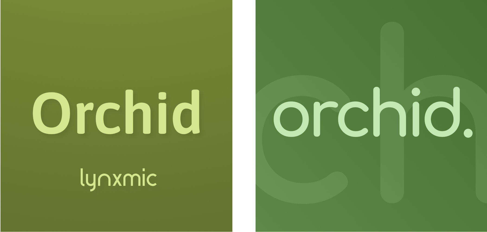

List of KayAurora Codenames
This article shows a list of codenames used by KayAurora in their projects.
C
Cosmos
Codename for a revamp of the Axeon Network Discord Server in July 2018.
L
Lyra
Codename for the Discord server that would have resulted from the merge between LynxPlaza and HoriServer (2) following the general sunsetting of the Lynxmic project in April 2025. Later cancelled as a result of the HoriServer (2) incident.
O
Orchid
Codename used for various later-cancelled projects for the Axeon Network in multiple instances since 2023:
- The Orchid Discord Bot (May 2023): spiritual successor (but unrelated) to 2018’s AxeonBot, used as a complementary extension to existing 3rd-party bots already in use in Axeon Network (at the time known as Lynxmic’s Square). The original bot account for it would later change to report the online status of MidoriMC on Discord.
- The Orchid Revolt Bot (February 2025): a multi-purpose bot with many features that anyone could add to their very own Revolt servers (similar to Venus feature-wise). The original bot account would later be deleted in March 2025.
- Project Orchid (July 2025): linking together all chats of the Axeon Network (the Discord Server, the Revolt Server, and the MidoriMC in-game chat).
- An example on how the idea would go: someone from Discord sends a message to the
#globaltext channel on Discord and it would show up on the#globaltext channel on Revolt or vice-versa. Messages from both channels from Discord and Revolt would show up in the MidoriMC in-game chat as well, and people online on MidoriMC can choose to have their messages go on both channels on Discord and Revolt as well.
Initial Orchid logos, from left to right: 2023 (for the Discord bot), 2025 (other planned projects)
- An example on how the idea would go: someone from Discord sends a message to the
P
Photon
Name used for a planned new tech-oriented YouTube channel throughout February 2025.
Preventemod
Name used for a project for a separate moderation bot for Discord that has been worked on in 2018, later cancelled.
The name can be understood as sort of a combination between the words “prevent” (“to prevent [bad event]”) and “mod” (“to moderate - take action to stop/prevent [bad event]”), with the letter “e” added between them in an attempt to create a more unique, fluent name.
R
Ruby
Name used for a project for a separate fun-oriented bot for Discord from 2018-19, also later cancelled.
Ruby’s bot account still exists to this day and it is planned it may be reused at some point for a future project for the Axeon Network.
U
Uranus
A replacement name for Sapphire.
W
Whirlpool
Name used for the Whirlpool Bot Plaza Discord Server in November 2018, which was gonna be an unified place for support for both Venus and Uranus before the latter project was cancelled.
SpringViewer Version 1.0
Debug Axeon KuroWiki Beta 5 Version 5.1.2678.nekori64.251004-1836